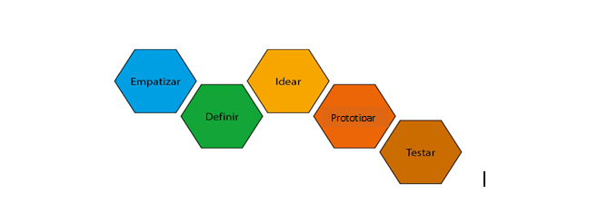

O nosso TCC usa como solução de problema a metodologia chamada “Design Thinking”. O “Design Thinking” é “[...] uma abordagem criativa e focada na resolução de problemas e no ser humano, propicia a descoberta de soluções novas e mais eficazes” (Brown, 2020, p. 7). Essa abordagem é divida em 5 etapas, conforme figura abaixo:
A primeira etapa é “empatizar”. Para Rocha (2018, p. 162), o “empatizar” nasce da compreensão do problema em seu contexto social. “Na etapa da descoberta/empatia, o ponto principal consiste em compreender o universo no qual a temática do problema está imersa. O problema é investigado a partir do entendimento da realidade (...)”. Em outras palavras, é necessário identificar as dores / os problemas que afligem nossa realidade.
Para Brown (2020, p. 56), a empatia é ponte de acesso para gerar insights: “Construímos essas pontes de insights por meio da empatia, a ver o mundo através dos olhos dos outros, compreendê-lo por meio das experiências alheias e senti-lo por suas emoções”.
Para chegar aos problemas, podemos usar o Brainstorming como ajuda nesse processo.
Aqui, a equipe irá fazer o levantamento de possíveis problemas e depois partir para observar e confirmar se esse problema é uma dor real.
A empatia ajuda a definir o problema.
Os ODS irão ajudar a definir o problema.
Dicas: